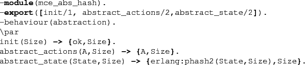

Next: Tables Up: Running McErlang Previous: Some Available Monitors Contents
As an example we show the code for the @mce_abs_hash@
abstraction module:

Such abstraction modules should conform to the @mce_abs_hash@
behaviour, i.e., export an @init@ function,
a state abstraction function @abstract_state@
and an action abstraction function @abstract_actions@.
An abstraction module can use a private state, which is passed
along as a parameter and is kept using the verification algorithm.
Concretely the @mce_abs_hash@ module above implements a ``hash abstraction'', whereby the whole program state is mapped to a hash value (an integer). The size of the hash table is sent along as the private data to the abstraction functions.